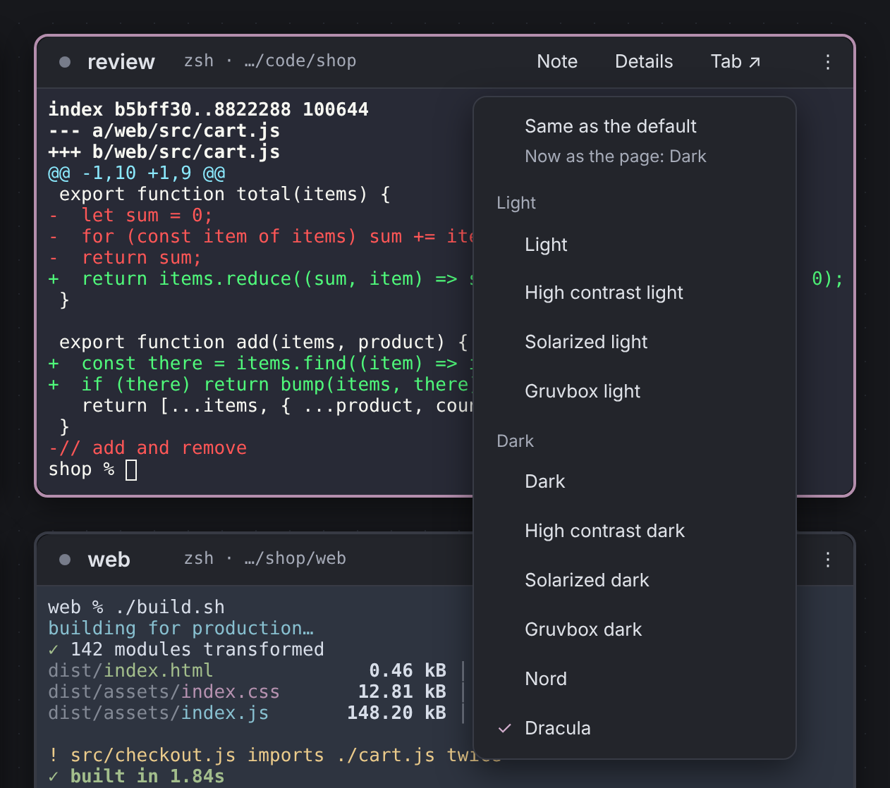

ターミナルのテーマ、色、フォント、キーをカスタマイズ
ページの色を 10 のテーマから選び、ターミナルごとに専用のテーマを付け、個々の色、ターミナルのフォントとカーソル、すべてのキーを、Settings か、自分自身を説明する 1 つの設定ファイルで決められます。
ライトとダークの 10 のカラーテーマ
Settings → Appearance は 3 つの選択肢から始まります。Light、Dark、そして新しいインストールの初期状態で、システムが変わるとそれに従う Match the system です。その下で、それぞれの種類のテーマを 1 つずつ選びます。Light、High contrast light、Solarized light、Gruvbox light のいずれかと、Dark、High contrast dark、Solarized dark、Gruvbox dark、Nord、Dracula のいずれかです。どれも色の小さなプレビュー付きで表示されます。
変更は再読み込みなしで、ページとすべてのターミナルにすぐ反映され、設定ファイルに保存されるので、Aubergine を開くどのブラウザーでも同じになります。パレットにも同じものがコマンドとしてあります。たとえば Color theme: Nord です。

ターミナルごとに違うカラーテーマ
ターミナルのメニューの Theme… で、ページのテーマに関係なく、そのターミナルを 10 のテーマのどれでも描けます。変わるのは本体だけで、タイトル、ノート、詳細はページのままです。専用のテーマがないターミナルは、Settings の Terminal theme（ターミナルの既定）に従い、それもなければページに従います。


同じ選択は、一覧のターミナルの行のメニュー、詳細、パレットにもあります。ターミナルと枠には専用の色も付けられ（13 色のどれか、または任意の色の Your own…）、キャンバスのタブも同様です。ターミナルの色は一覧の行の色にもなります。

個々の色を手で決める
テーマに加えて、ページの 35 の色を設定ファイル config.json の appearance.colors で決められます。色の名前と、#rrggbb の形の値です。一番上に書けばすべてのテーマの上に、"[nord]" のように角かっこで囲んだテーマ ID の下に書けばそのテーマだけの上に効き、そちらが優先されます。
{
"$schema": "./config.schema.json",
"appearance": {
"colors": {
"accent": "#c678dd",
"[nord]": { "terminal-bg": "#242933" }
}
}
}名前はページの色トークンで、bg、text、accent、terminal-bg などです。一覧は docs/design.md にあります。誤った項目は飛ばされ、ファイルの残りはそのまま有効です。どれが飛ばされたかは Settings → Appearance が示します。自分で決めた色は自分のもので、書いた色が読みやすいかは何も確かめません。
自作のテーマをファイルで
自作のテーマはデータフォルダーの themes/ にある JSON ファイルです。10 のうち同じ種類の 1 つを土台にし、35 色のどれでもその上に重ね、ターミナル自身の色（文字、カーソル、選択部分、プログラムが求める 16 色）も指定できます。同じ種類の 10 のテーマの後に「自作」として並び、それらと同じ場所で選べます。ページ、ターミナルの既定、または 1 つのターミナルにです。影とフォーカスリングは土台のままで、ファイルの中身が実行されることはありません。
{
"$schema": "../theme.schema.json",
"name": "Harbor",
"kind": "dark",
"base": "nord",
"colors": { "bg": "#0e1a24", "accent": "#5fb3b3" },
"terminal": { "foreground": "#d8dee9", "cursor": "#5fb3b3" }
}aubergine theme new harbor --from nord は元のテーマのすべての色を書いた出発点のファイルを作ります。aubergine theme check はファイルの誤りを伝えます。Settings の Read themes again で変更を読み込みます。色が読みやすいかどうかの判断はあなたのものです。Settings は文字が読みにくいかもしれないときに伝えるだけです。形式は docs/themes.md にあります。
プロジェクトのテーマと、タグごとのターミナルのテーマ
プロジェクトは、見ているあいだページを自分のテーマで描けます。ひと目でどこにいるかがわかります。Projects… で、プロジェクトの横の When light と When dark で種類ごとに 1 つ選びます。As the page なら Settings のままです。ほかのプロジェクトではページは選んだとおりで、そのプロジェクトのアドレスで再読み込みすると、最初の描画からそのテーマで描かれます。
Settings の Terminal theme の下にある By tag で、タグの付いたターミナルにテーマを与えられます。たとえば prod の付いたターミナルをすべて Dracula に、ページのテーマに関係なくすぐに。ターミナルが持つタグの最初の行が優先され、ターミナル自身のテーマはそのすべてより先です。設定ファイルでは appearance.byTag です。
{
"appearance": {
"byTag": [
{ "tag": "prod", "theme": "dracula" },
{ "tag": "docs", "theme": "solarized-light" }
]
}
}アクセントの色を変えるだけで十分なことも多いでしょう。aubergine theme new teal --from nord --accent "#2f9e8f" は、Nord のアクセントとそれに合う 5 色だけを、読みやすさを保つよう計算して変えるテーマファイルを書きます。ほかのテーマと同じように、プロジェクトやタグに選べます。
フォント、カーソル、キーボードショートカット
Settings → Appearance の Terminal text で、ターミナルの文字の大きさ（8〜32 ピクセル）とフォントを決めます。フォントはリストで、最初に見つかったものが使われます。Cursor では形（ブロック、バー、下線）と点滅するかどうかを決めます。
どのキーも変えられます。設定ファイルに shortcuts を加え、コマンド名にキーの組み合わせ、その一覧、またはキーなしの null を書きます。shortcutsInAppWindow も同じ形で、Aubergine を専用ウィンドウのアプリとしてインストールしたときだけ効きます。ページを再読み込みすると、ショートカット一覧（?）、パレット、ツールチップが、決めたとおりのキーを表示します。
{
"shortcuts": {
"terminal.park": "X",
"attention.next": ["Ctrl+Cmd+G", "W"],
"view.fit": null
}
}2 回決めたキーや読めないキーは、ショートカット一覧の上部とサーバーが知らせ、ファイルの残りはそのまま効きます。単独のキー、または Ctrl か Option とキーの組み合わせは、どのターミナルもキーボードを持っていないときだけ働きます。ターミナルのどのプログラムも、必要なキーを受け取り続けられるようにするためです。詳しくは README の Keyboard へ。
タイトルと行に表示する内容を選ぶ
ターミナルの名前のあと、そのタイトルとリストの行には 2 つのテンプレートの内容が表示されます。{state}、{folder}、{time}、{field:Ticket} のようなプレースホルダーを含むテキストです。Settings → Appearance → Titles and rows で変更でき、入力するたびに各欄の下に実際のタイトルと行が描かれます。設定ファイルでも変更できます。この例では、タイトルは状態、フォルダー、フィールド Ticket、リンク、タグを、行は状態、実行のステップ、ブランチ、時刻を表示します:
{
"appearance": {
"titleFormat": "{state} {folder} · {field:Ticket} {links} {tags}",
"rowFormat": "{state} {step} {branch} · {time}"
}
}表示するものがないプレースホルダーは、そこへ続くテキストと一緒に省かれます。チケットもリンクもタグもないターミナルでは、このタイトルは状態とフォルダーだけを表示し、余分な点は残りません。テンプレートに入るのはテキストとプレースホルダーだけで、マークアップもスタイルもありません。どれもページが他の場所で描くのと同じように描かれ、状態はその色で、リンクはチップになります。誤ったプレースホルダーは欄の下で知らされて飛ばされ、Reset はテンプレートがないときの表示を正確に戻します。すべてのプレースホルダーは docs/templates.md にあります。
自分自身を説明する 1 つの設定ファイル
これらはすべて Aubergine のデータフォルダーの config.json に保存され、その場所は aubergine settings path が表示します。どのキーも省略できます。読めないファイルは既定値を意味し、サーバーが起動しなくなることはありません。ページの Settings は変更したキーだけを書き、ファイルの残りは書いたままにします。
サーバーは起動するたびに、ファイルの隣に config.schema.json を書きます。1 行加えるだけで、JSON Schema を読むエディターがすべてのキーを説明し、補完します。
{ "$schema": "./config.schema.json" }aubergine settings list はすべてのキーを現在の値とともに表示し、既定と違うものに印を付けます。aubergine settings schema はスキーマを表示します。docs/settings.md は、すべてのキーとその既定値、そして Settings が書くのか自分で書くのかを説明しています。
aubergine settings path
aubergine settings list
aubergine settings schemaページでは、Settings → Every setting が同じキーを値とともに一覧にし、入力に合わせて絞り込みます。Settings が変えるキーはその操作部へ案内し、手で書くキーには、ファイルに加える行のための Copy があります。そこで設定が変わることはありません。

一部の選択はこのブラウザーのもので、ブラウザーに保存されます。キャンバスをタブ、1 つのリスト、列のどれで表示するか、キャンバス上のバーの位置と開いたままにするか、サイドパネルとマップを畳むか、パネルとターミナルの詳細の幅、そしてターミナル一覧の絞り込み、グループ分け、並び順です。
プログラムやエージェントが変えられること、あなたのものとして残ること
ローカル API を通じて、API トークンを持つプログラムは canvases:write でキャンバスを整えられます。名前、色、順序を決め、その上のターミナルを動かし、大きさを変え、色を付け、枠を加えます。sessions:write では、ターミナルの名前変更とタグ付け、フィールドの変更、カラーテーマの指定ができます。届くのはトークンが届くプロジェクトだけです。
ターミナルの中のエージェントは、自分のターミナルだけを説明し、ほかのものは説明しません。名前、何のためのものかの要約、リンク、フィールドを、aubergine describe、aubergine link add、aubergine field set で決めます。あなたが自分で書いた名前、要約、フィールドはそのまま残り、エージェントが送ったものは提案として横に保存されます。エージェントや workflows:write を持つプログラムは、aubergine theme propose でカラーテーマを提案することもできます。あなたが Review で読み、描かれた姿を見て、ページで試し、受け入れるまで、どこにも描かれません。受け入れるとそのファイルが書かれますが、何も選ばれません。
設定そのものはあなただけのものです。トークンも、ターミナルも、エージェントも変えられません。PUT /v1/settings/appearance はサインインしたブラウザーにしか応えず、appearance.colors、shortcuts などはファイルに手で書きます。
ほかのツールではインターフェースをどうカスタマイズできるのか
この表の書き方。各ツールについての記述は、そのツール自身のドキュメントを 2026 年 11 月 28 日に読んだもので、名前とセルからリンクしています。このためにこれらのツールを動かしてはいません。「見当たらず」は、読んだドキュメントに記述がないという意味で、そのツールにできないという意味ではありません。誤りや古い情報があれば、お知らせください。
| ツール | 設定 | テーマと色 | 独自の CSS | 独自のコード | タイトルとステータスのテンプレート |
|---|---|---|---|---|---|
| VS Code エディター | settings.json か Settings エディター。ユーザーからワークスペース、フォルダー、言語へと層になる | 拡張機能のテーマファイル。workbench.colorCustomizations をすべてのテーマか 1 つに | 非対応とドキュメントに記載 | 拡張機能。VS Code と同じ権限を持つが、インターフェースの DOM には触れない。独自の画面には Webview | window.title とターミナルのタブタイトルが ${…} 変数を受け付ける |
| Zed エディター | Settings Editor か、コメントを書ける settings.json。ユーザー、次にプロジェクト | スキーマ付きの JSON テーマファイル。1 つのテーマに theme_overrides。ライト、ダーク、システム | 見当たらず | Rust から WebAssembly にコンパイルした拡張機能。制限できるケイパビリティ付き | 見当たらず |
| Obsidian ノートアプリ | 各保管庫の .obsidian フォルダーのファイル | テーマは CSS。CSS 変数が文書化されている | CSS スニペット。1 つずつオンにする | Obsidian と同じアクセスを持つ JavaScript のプラグイン。制限モードをオフにするまで動かない | 見当たらず |
| Hyper ターミナル | 1 つのファイル。文書化されたリリースでは .hyper.js、開発ブランチでは hyper.json | テーマはプラグイン | ウィンドウ用の css。termCSS はバージョン 2 以降ターミナルの文字を装飾しない | Electron とレンダラーが読み込む npm プラグイン。React コンポーネントを包み、Redux ミドルウェアを加える | 見当たらず |
| WezTerm ターミナル | Lua ファイル .wezterm.lua | 700 以上の配色。自作は Lua か TOML。個々の色は colors | 見当たらず | 設定そのものが Lua。プラグインは Git アドレスから取る Lua | Lua 関数がタブとウィンドウのタイトルを返す（format-tab-title） |
| tmux ターミナルマルチプレクサー | ファイルに書く tmux コマンド。サーバー、セッション、ウィンドウ、ペインごとのオプション | status-style や window-style などのスタイル | 見当たらず | フックが tmux コマンドを実行。プログラム向けのコントロールモード | #{…} を使うフォーマット。ステータス行、ウィンドウ一覧、ペインの境界、タイトルに |
| kitty ターミナル | kitty.conf。インクルードでき、変わると読み直す | テーマは .conf ファイル。kitten themes で 300 以上から選べ、ダーク用とライト用を別に決められる | 見当たらず | kitty の内部に完全にアクセスできる Python のキトン。ウォッチャー | tab_title_template。{custom} で自分の Python を呼ぶ |
| Ghostty ターミナル | key = value のファイル。config-file でほかを追加 | テーマは設定ファイル。ライト用とダーク用を 1 つずつ | 見当たらず | ターミナルに重ねる GLSL シェーダー。macOS では AppleScript | 見当たらず |
| Windows Terminal ターミナル | Settings 画面か settings.json。JSON スキーマあり | プロファイルごとの配色。ウィンドウとタブのテーマはライトとダーク、JSON でのみ | 見当たらず | 見当たらず。ほかのアプリが JSON フラグメントでプロファイルと配色を追加 | 見当たらず。プロファイルが tabTitle と tabColor を決める |
| iTerm2 ターミナル | Settings のプロファイル。プロパティリスト形式の Dynamic Profiles | ユーザー、ホスト、フォルダー、ジョブで選ばれるプロファイル（Shell Integration が必要） | 見当たらず | Python API、Python で書くステータスバー部品、AppleScript | セッション名、バッジ、ステータスバーの補間文字列 \(…) |
| Aubergine キャンバス上のターミナル | config.json と Settings。エディター向けの JSON Schema 付き | 10 のテーマ、ライト・ダーク・システムに合わせる。そのいずれかに重ねる自作の JSON ファイル。プロジェクトごと、タグの付いたターミナルごと、ターミナルごとに 1 つ。35 色を手で、すべてのテーマまたは 1 つに | なし。予定：文書化されたフック付きの custom.css | なし。予定：プラグイン | 2 つ。ターミナルのタイトルとリストの行のためのもので、{state} や {field:Ticket} のようなプレースホルダーを含むテキスト |
ここにあるどのツールも設定をファイルに保存し、VS Code、Zed、Windows Terminal には、Aubergine と同じく、それを書く画面もあります。ほとんどでテーマもファイルです。VS Code と Zed では JSON、Obsidian では CSS、WezTerm では Lua か TOML、kitty と Ghostty では設定ファイルです。VS Code、Zed、WezTerm では、ここでの appearance.colors のように、テーマの上に個々の色を変えられます。
いちばん違うのはコードです。WezTerm の設定は全体が Lua のプログラムで、kitty と iTerm2 は自分の Python を動かし、Hyper のプラグインはインターフェースを包む JavaScript です。Obsidian と Hyper は自分の CSS も受け付けます。VS Code の拡張機能はインターフェースの DOM に触れられず、独自のスタイルシートにも対応していません。Zed は拡張機能を WebAssembly として、制限できるケイパビリティ付きで動かします。tmux、WezTerm、kitty、iTerm2 は、テンプレートや関数でタイトルとステータス行を組み立てます。
現在の Aubergine は設定の側にあります。自分自身を説明するファイルにあるテーマ、色、キー、設定の一部を書き込むページ、そしてターミナルのタイトルと行に表示する内容のテンプレートです。ページであなたのコードを実行することはなく、あなたのスタイルシートも受け付けません。それらは ロードマップにあり、まだ作られていません。
予定していること
custom.css とプラグインは計画中で、まだ作られていません。ロードマップを参照してください。
よくある質問
ターミナルごとに違うカラーテーマにできますか？
はい。ターミナルのメニューの Theme… で、ページのテーマに関係なく、その本体を 10 のテーマのどれでも描けます。タグの付いたターミナルには Settings でそのタグによるテーマを与えられ、ほかのターミナルはターミナルの既定か、ページに従います。
Aubergine に自分の CSS を加えられますか？
今はできません。個々の色は設定ファイルで手で決められます。文書化されたフック付きの custom.css は予定で、まだ作られていません。
Aubergine の設定ファイルはどこにありますか？
Aubergine のデータフォルダーにある config.json です。aubergine settings path が場所を表示し、サーバーも起動時に表示します。
エージェントが Aubergine の見た目を変えられますか？
設定は変えられません。設定はあなただけのものです。エージェントは自分のターミナルに名前を付けて説明でき、あなたが読んで受け入れるのを待つカラーテーマを提案できます。API トークンが許すプログラムは、ターミナルの名前変更、タグ付け、テーマ指定、キャンバスの整理ができ、テーマの提案もできます。
関連：目的のターミナルを見つける · tmux を覚えずに tmux を使う · セキュリティとプライバシー · よくある質問
Aubergine は、このページで名前を挙げたどのツールとも提携していません。各名称はそれぞれの所有者の商標です。